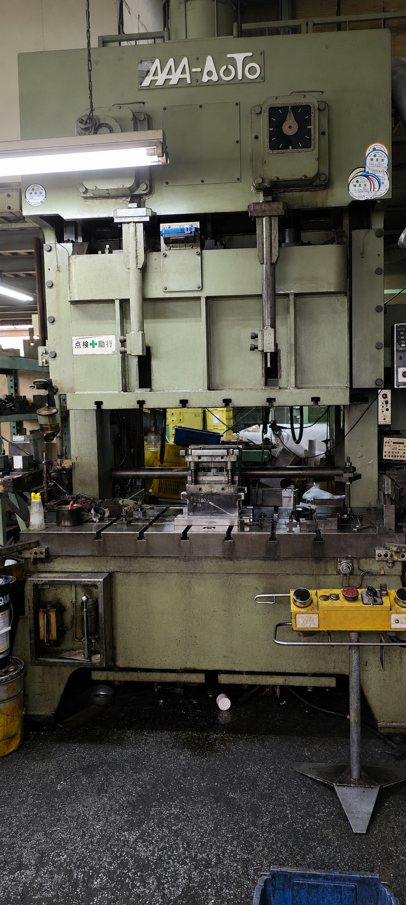
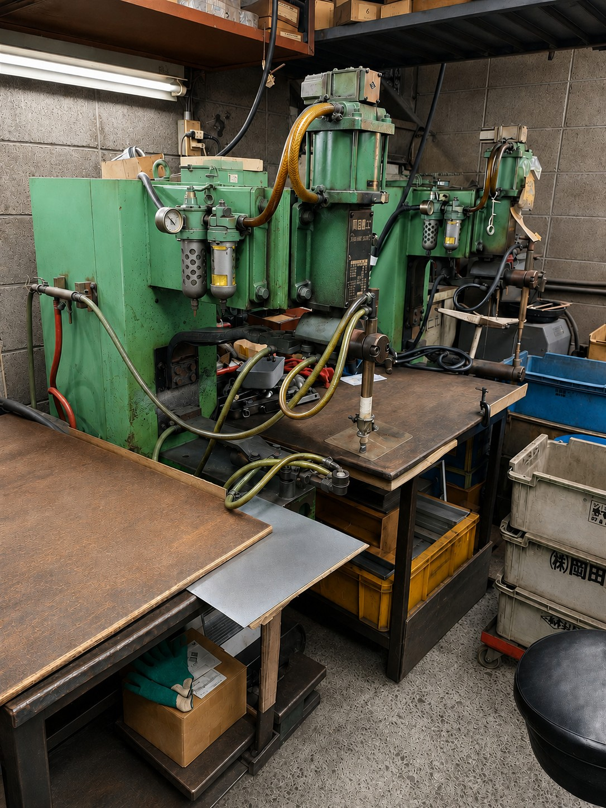

Equipment
設備紹介
金属部品に向き合う、町工場の設備。
Our Factory
金属部品に合わせて、
設備を使い分ける。
110t以下のプレスを多く備え、建築金物や手に持てるサイズの金属部品を中心に加工しています。数量や形状に合わせて設備を使い分け、少人数の町工場ならではの小回りで対応します。
Press Machines
加工設備

形状や加工内容に応じて使い分けるプレス設備です。

KOMATSU、AAA-Autoの2台を備えています。

AAA-Auto 45t・110t、KOMATSU 35tを備えています。

松下製のスポット溶接機を2台保有。大がかりな溶接ではなく、プレス加工後の小部品や金物の接合に対応します。
Equipment List
保有設備
プレス8台・スポット溶接機2台・タッピングマシン1台| 設備 | メーカー | 能力・仕様 | 台数 |
|---|---|---|---|
| プレス | AAA-Auto | 45t・60t・110t・150t ダブルクランク | 4台 |
| プレス | KOMATSU | 25t・35t・60t | 3台 |
| プレス | AMADA | 25t | 1台 |
| スポット溶接機 | 松下 | 定格35kVA・最大83kVA | 2台 |
| タッピングマシン | 日立製 | ― | 1台 |
Tooling
プレス金型

製品形状や加工内容に合わせたプレス金型を用い、建築金物を中心とした金属プレス加工を行っています。

既存金型を使った製作や、金型だけ残っている製品の引き継ぎについても、状態を確認しながらご相談いただけます。
Contact